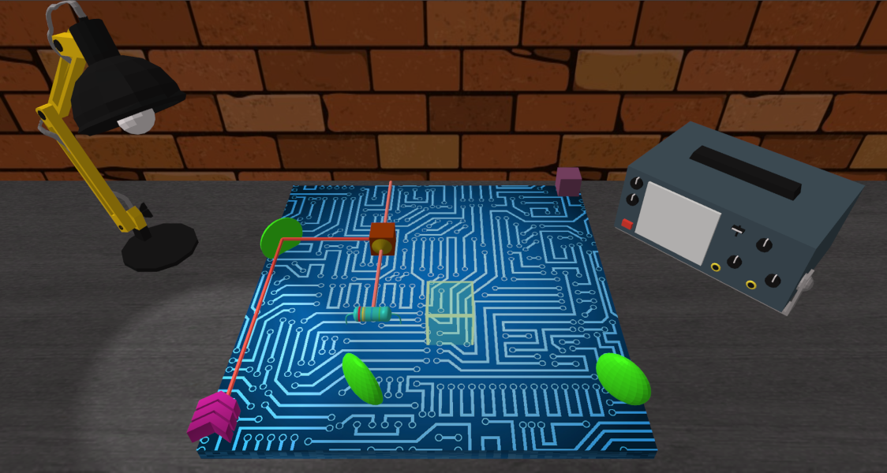

I've always loved video games and some times ago, I implemented some prototypes to explore game development, in particular using the OpenGL API.
These experiments led me to build a lightweight 3D engine with the following features:
Custom OpenGL forward renderer using Phong shading and directional, spotlight and point lighting
Scripting with JavaScript using the Duktape engine
With some friends, we participated in the Global Game Jam and used this engine
to build Lost in Transmission, a small puzzle game about electronic components:

I then extended the engine to explore CPU skeletal animation.
The Mutant model from Mixamo celebrated it by a wonderful dance:
I'm also a huge fan of RTS, city-building and exploration games, in particular the Anno games
and I've always wanted to implement my own city-building game.
I then worked on a prototype engine designed for grid based city-building resource-gathering games.
This prototype also allowed me to further explore rendering techniques with OpenGL.
The renderer features:
Deferred rendering
Phong shading
Shadows based on dynamic shadow mapping
Screen Space Ambient Occlusion (SSAO)
Post-processing filters
That was a fun experience,
this is what this prototype looks like: